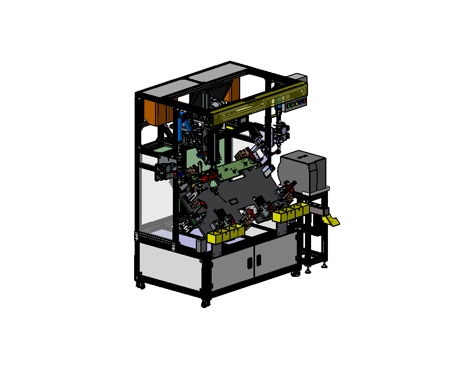
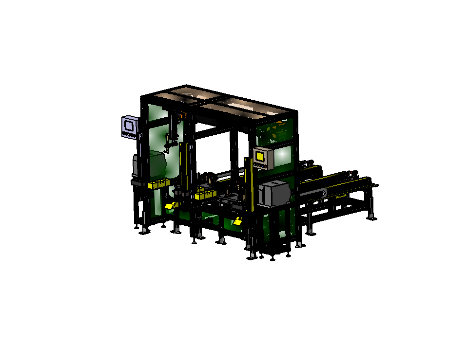
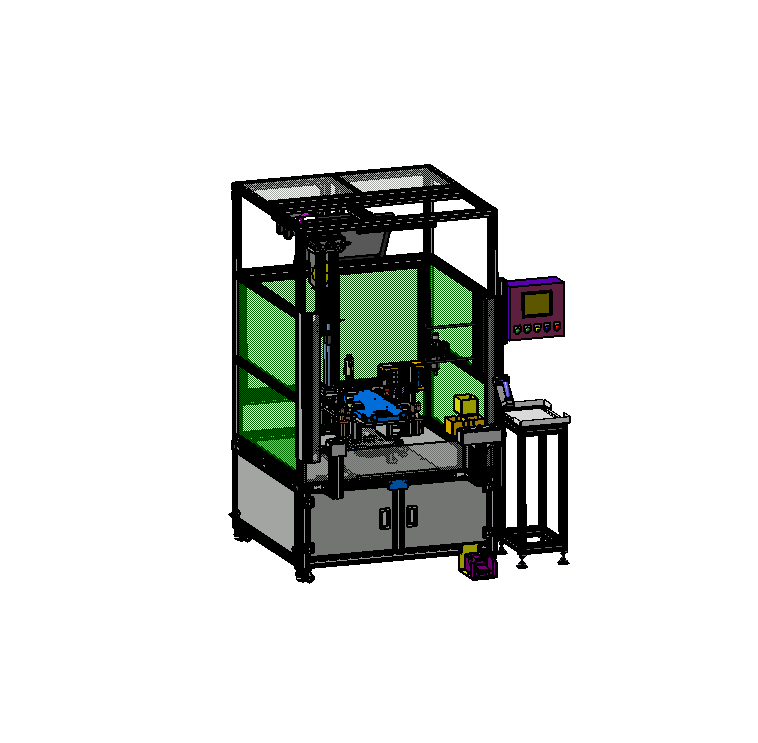

자동화설비
AUTOMATION EQUIPMENT
AUTOMATION ENGINEERING생산 목적에 맞춘
생산 목적에 맞춘
자동화설비 설계·제작
고객의 생산환경과 작업 순서를 분석하고 필요한 동작과 기계구조를 설계·제작합니다. 대상물의 특성, 작업공간, 구성품 간섭과 유지보수성을 검토하여 공정에 맞는 설비를 구성합니다.
필요한 공정부터 말씀해주세요.
틸팅·슬라이드·턴테이블은 적용 예시입니다. 소개된 방식 외에도 필요한 동작과 공정 조건을 알려주시면 설계·제작 가능 범위를 검토하겠습니다.
맞춤 설계·제작 상담 →설계 형상 예시
아래 이미지는 사업영역의 이해를 돕기 위한 적용 예시입니다.



산업용 로봇 자동화 시스템에 적용되는 핸드(Gripper) 및 스탠드도 설계·제작합니다. 워크 조건에 맞춰 기계구조와 거치·교환 조건을 검토합니다.
공정 검토
- 자동화 대상과 작업 순서
- 워크 조건과 구동 구조
- 이동 범위·정지 위치·간섭
- 작업 및 유지보수 접근성
설계·제작
- 기계구조 구상 및 상세설계
- 제작도면과 구성품 사양 정리
- 부품 제작과 설비 조립
- 제작 결과 확인 및 납품
구성 검토
- 공정에 필요한 동작과 기계구조
- 워크의 안착·고정·이동 조건
- 구성품의 조립성과 제작성
- 구체적인 수행 범위는 상담 후 협의
MECHANICAL ENGINEERING기계설계 및 제작
신규 장비 구상과 기존 설비 개선 요구를 검토합니다. 구상·3D 모델·제작도면을 거쳐 목적에 맞는 기계 구조를 제작합니다.
- 요구사항과 기초자료 검토
- 기구 구성·조립성·제작성 검토
- 부품 제작과 설비 조립
WELDING AUTOMATION자동화 용접설비
용접 대상과 작업방식에 맞춰 자동화 기구와 설비를 설계·제작합니다. 구체적인 공법과 작업 범위는 프로젝트 조건을 확인한 뒤 협의합니다.
- 워크 위치결정과 고정
- 용접건·토치 접근성 검토
- 기구 동작과 작업공간 검토
자료 보안을 위해 설비 이미지는 실제 작업 원본 대신 주요 형상을 간략화한 참고 이미지로 제공합니다.